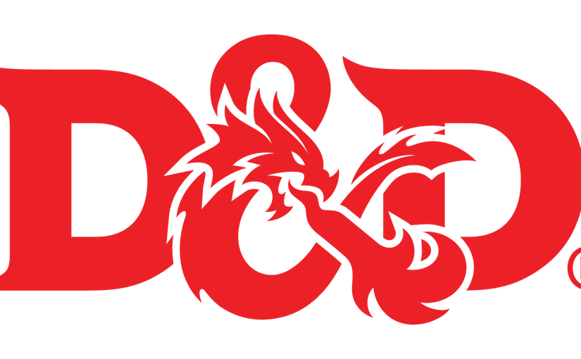

Vezes que o Joni nos deixou na mão
Mais longo que a livraria de Babel
O Joni não veio jogar lol por diversos motivos
insensatos
, dentre esses:
Dormir
Cochilar
Deitar
Nanar
Mimir
Repousar
Hibernar
Pegar no sono
Etc
O que causou:
Estresse
Partidas perdidas
Raiva
Xingamentos
Atrasso
Bullying (merecido)
Momentos de paz
Mid laners que farmam
Etc
O Joni não veio à escola e a projetos escolares por multiplos motivos
imprudentes
, dentre esses:
Dormir
Jogar roblox
Chuva
ACIDENTALMENTE
perdeu o tempo
Prova
Seminário em grupo
Temperatura estava 0,00000001 graus celsius acima do normal
Desenhar 1 milimetro do pedido do Nata
Etc
Até mesmo quando vinha ainda causava problemas, como:
Colocava memes em projetos importantes
Desenha NSFW em borrachas e cadernos
Dormia
Deixava os amigos apresentando trabalho sozinhos
Não fazia a sua parte do trabalho
Demorava 50 seculos para fazer sua parte
Etc

O Joni não aparecia nos Rpgs de forma
inconsequente
, pelos seguintes motivos:
Dormir
Escutar rap de anime
Fingir que estava dormindo
Jogar solo leveling
Bulhufas
Patavina
.
Inexistente
Todos acima
E ainda avacalhava de varias formas:
Não desenhar o pedido do Nata
Fazer um token novo que não foi usado
Escolher uma classe extremamente OP
Matar o grupo involuntariamente
Matar o grupo voluntariamente
Se matar
Não levava a historia do proprio personagem a serio
Deixou o Gustavo calvo
Etc
O Joni conseguia destruir o servidor de forma
irresponsável
, pelos seguintes motivos:
Explodindo as casas
Entrando no criativo
Discutindo sobre o pc rodar com mods
Não pegava recursos
Etc
Os seres afetados foram:
Gustavo
Nata
Nicolas
Luciano
Yohann
Diversos animais
Diversos villagers
Diversas casas
Etc
Para mais informações
Clique aqui!